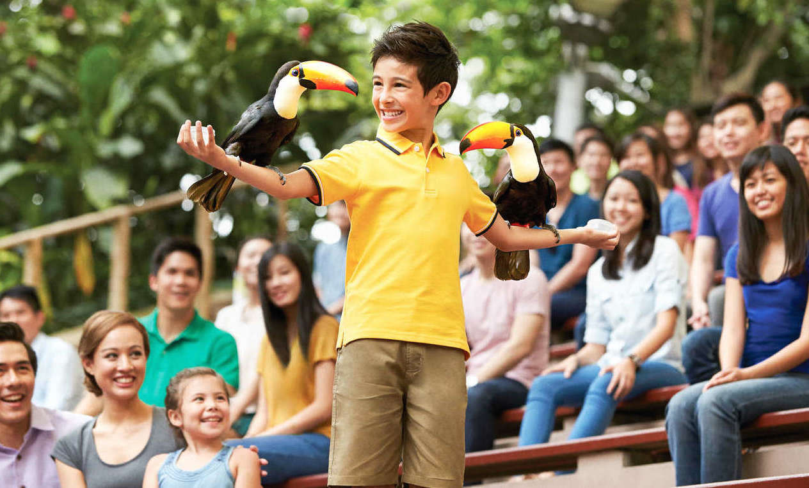
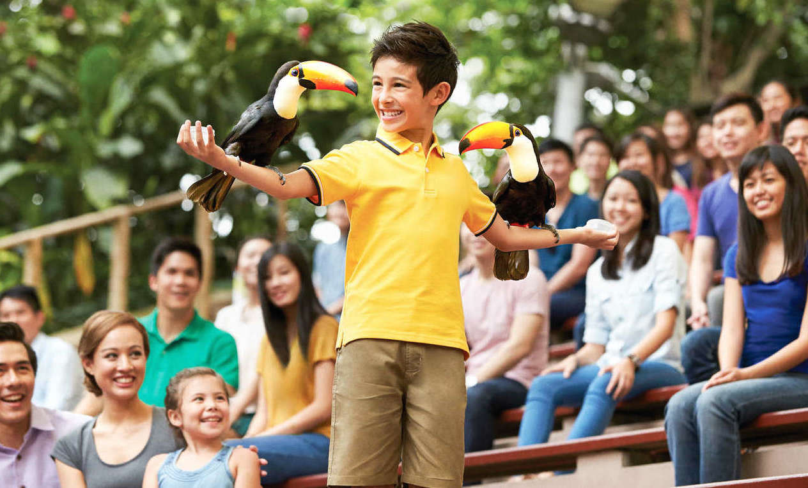
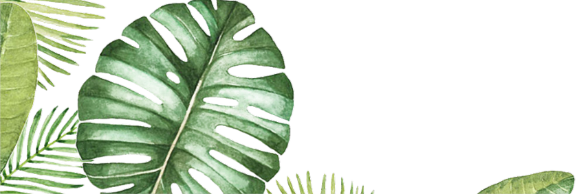

Welcome to


About
Jurong Bird Park is an aviary and tourist attraction in Jurong, Singapore. The bird park, managed by Wildlife Reserves Singapore, covers an area of 0.2 square kilometres (49 acres) on the western slope of Jurong Hill, the highest point in the Jurong region.
History
The idea of a permanent aviary was first conceived by the late Dr Goh Keng Swee, then Minister for Finance, in 1968. During a World Bank meeting in Rio de Janeiro, Dr Goh visited its zoological garden and was impressed with its free-flight aviary. He set out to ensure that Singaporeans would have a place where they could escape from urban life and relax with nature.
Work on the aviary started in January 1969. A 35-acre site on the western slope of Bukit Peropok in Jurong was chosen for the project. The bird park was expected to be completed by the end of 1969.
On 3 January 1971, Jurong Bird Park, built at a cost of S$3.5 million, was opened to the public.
Jurong Bird Park is now a world-famous bird zoo where there are specimens of magnificent bird life from around the world, including a large flock of flamingos. It is currently the world's largest bird park in terms of the number of birds, and second largest both in the number of bird species and land area (after Germany's Weltvogelpark Walsrode). There are 5,000 birds of 400 species in Jurong Bird Park, of which 29 are of threatened species.
In 2006, Jurong Bird Park completed a S$10 million makeover. As a result of the upgrade, the park got a new entrance plaza, a park-owned and managed Bongo Burgers restaurant, an ice cream parlour, a gift shop and a bird hospital.
Things to do
Wildlife Tours
 

Here’s something no-birdy should miss! Fly a raptor, snuggle up to Sally the hornbill and meet a chick nanny in this exclusive tour hosted by our friendly bird keepers. Make your visit extra wild today!
Feeding the Animals
Catch the birds when they’re most active – during feeding sessions! Listen to the keepers share stories and even get to feed these feather friends yourself.
Interactive Sessions
Enjoy informative and entertaining live commentary from the keepers as well as close-up encounters with the birds as they are being fed.
A multitude of fun activities awaits kids! From a watery playground for a splashing good time, uncovering an extensive egg collection and more!
These holilday camps encourage kids to explore with self-learning opportunities, team-bonding activities as well as unique insights into wildlife.
2 Jurong Hill, 628925
Click on the Jurong Bird Park Singapore link to find out more
